對話式 CAD ・ 使用手冊
用「講的」做 CAD:從第一句話,到可製造的模型
0這是什麼
對話式 CAD(ChatCAD) 是一個在瀏覽器裡「用講的做 CAD」的本機工具。你在左邊聊天框用工程語言描述零件或機構,右邊的 3D 視圖就即時長出真的可製造模型——不是示意貼圖,而是真實的 STEP/GLB 幾何。接著你用三種方式反覆修到滿意,最後匯出送製造。

- 1頂部列:品牌、模式切換、功能鈕、狀態
- 2階段列:看代理正在理解/規劃/生成/驗證/呈現
- 3對話欄:用工程語言描述與追加需求
- 43D 視圖:即時長出真實可製造模型
- 5參數列:拉滑桿改尺寸即時重生
- 6版本時間軸:回退與匯出
三個最重要的心智模型
- 產出是真的:STEP 是精確幾何、GLB 是 3D 顯示,兩者都可下載、可送製造。
- 代理會先想再做:頂部階段列讓你看到它正在「理解 → 規劃 → 生成 → 驗證 → 呈現」,不是黑箱。
- 迭代有三條路:打字追加需求、在 3D 上圈選幾何回饋、拉參數滑桿即時重生——不必每次重講一遍。
背後怎麼運作(平白版)
你打的每一句需求,交給 Claude Agent SDK 驅動的「CAD 工程師代理」。代理呼叫既有的 text-to-cad pipeline,實際寫出參數化產生器、產出 STEP 與 GLB,並對幾何跑驗證(有效實體、干涉、運動掃掠),再把結果載進畫布。每一次修改都記成一個版本,可隨時回退。
1開始前:認證與啟動
ChatCAD 是本機 app,沒有帳號登入畫面。它靠環境變數綁定你的 Claude 用量,二選一:
- 訂閱綁定(OAuth):用
claude setup-token產生的 token(限本人自用)。 - API key:按量計費的
sk-ant-api…。
把其一寫進 apps/cad-chat/.env.local 後,在 app 目錄啟動 dev server:
cd apps/cad-chat npm run dev # 單一埠,預設 http://127.0.0.1:8788/

- 1在這裡用一句話描述你要的零件或機構
- 2或點範例卡快速開始
- 3上方切換「草模 / 設計」兩種模式
2兩種模式:設計 vs 草模
每個對話一出生就決定是「設計」還是「草模」模式,切換器在頂部正中央。先想清楚這一步能省很多時間。

- 1草模:幾秒搭出會動的機構示意(零 Python)
- 2設計:產出精確、可匯出的真實 CAD
| 設計 / 正式 | 草模 / MOTION SKETCH | |
|---|---|---|
| 產物 | 真 STEP + GLB(參數化產生器) | 宣告式場景 JSON(零 Python、零 STEP) |
| 目的 | 精確、可製造、可匯出的零件/組合件 | 快速驗證機構拓撲與運動可行性 |
| 驗證 | 有效實體 / 干涉 / 運動掃掠(真跑) | 剛體運動示意,不宣稱干涉/公差/強度 |
| 何時用 | 要尺寸、要標準件、要匯出送製造 | 還在想機構動不動、幾個自由度、汽缸還是馬達 |
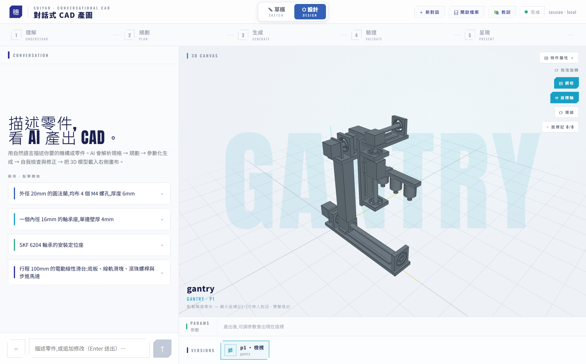
- 1設計模式:真實 STEP/GLB 幾何,可下載送製造
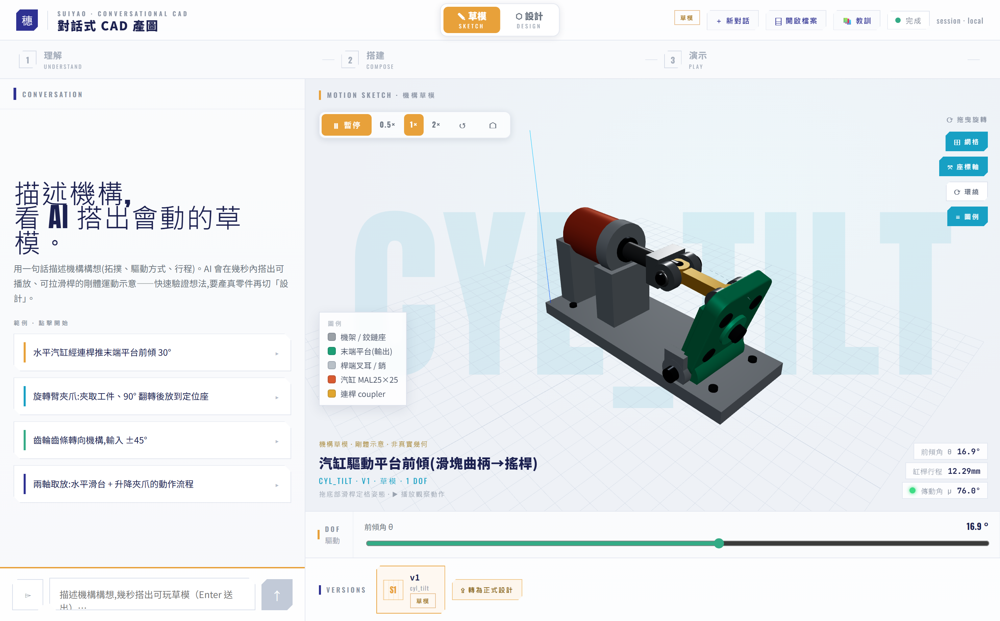
- 1草模模式:剛體運動示意,驗證機構動得動
- 2播放/速度/回原位控制
- 3拖驅動滑桿即時擺姿態
3你的第一個模型
這是最重要的一章。跟著走一遍,你就會用了。
- 描述需求:在左下輸入框用工程語言講清楚。愈明確(行程、負載、驅動、傳動),代理愈不用回頭問你。
- 看解析規格:代理先把你的話解析成一張「規格卡」,自行假設的值會標琥珀色「假設」。
- 回答釐清(若有):規格不足或牽涉驅動/傳動這類拓撲級決定時,代理會先問再做。
- 等它生成:代理寫產生器、產 STEP+GLB,畫布顯示五階段進度。
- 檢視第一個模型:模型載入畫布,可拖曳旋轉、圈選、看細節。
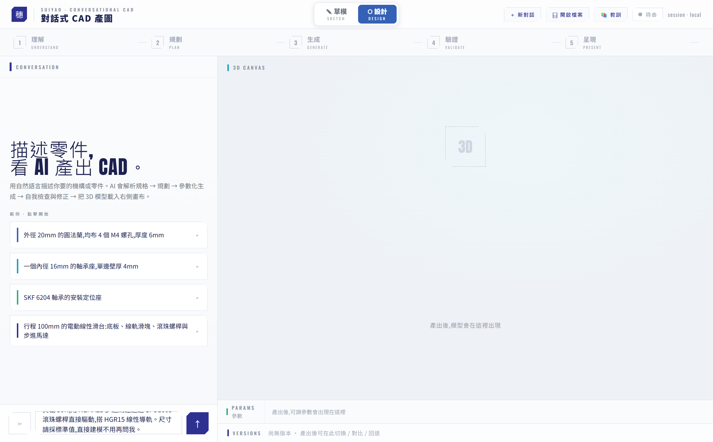
- 1把工程語言講清楚:行程、負載、驅動、傳動
- 2按 ↑ 或 Enter 送出
釐清精靈:代理先問再做
只要有「假設」值、或需求含運動軸卻沒指明驅動/傳動,代理就會浮出一個兩步聚光燈精靈。這時視圖區是唯一作答面,左欄會反灰凍結成上下文(左欄那張澄清卡只是被動紀錄)。

- 1代理先問再做:視圖中央聚光燈精靈
- 2「假設」值(琥珀)可點開改
- 3兩步閘門:先確認規格,再選配置
- 4左欄反灰:作答重心讓給視圖
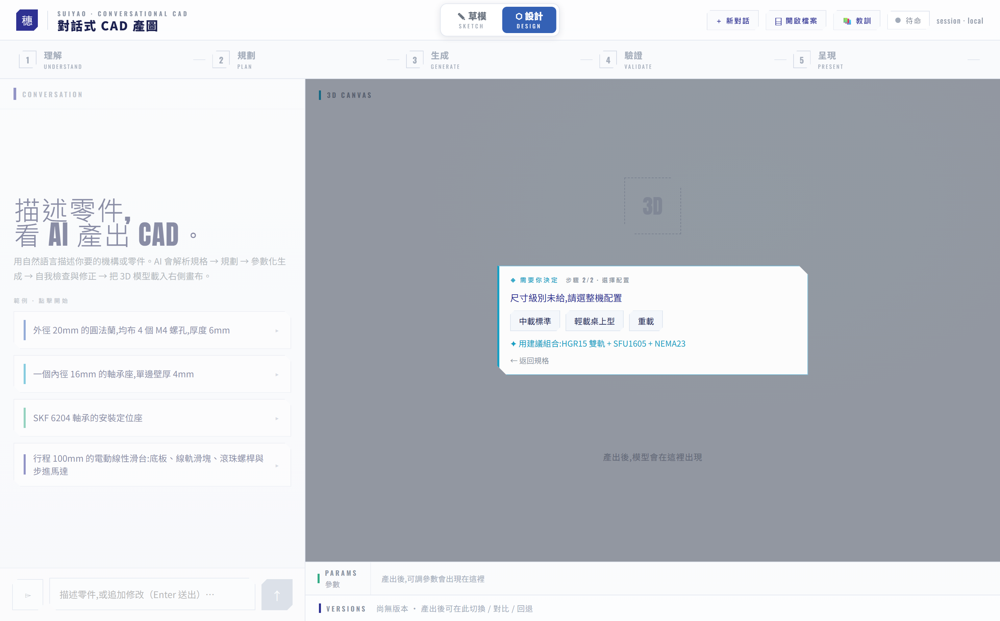
- 1驅動/傳動屬拓撲級決定,猜錯整台重做故先問
- 2選一個整機配置組合
- 3或直接採用建議組合

- 1五階段直列:理解→規劃→生成→驗證→呈現
- 2即時活動:看代理正在做什麼
- 3當前工具卡(可展開原始碼)
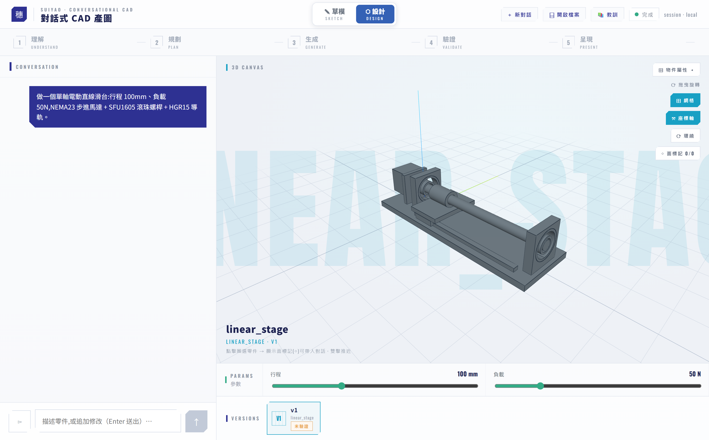
- 1你打的需求(左欄對話串)
- 2產出的真實 3D 模型:可拖曳旋轉、圈選、匯出
- 3可調參數自動出現在底部
- 4成果存成版本 v1,之後每次修改都新增一版
4檢視與挑選幾何
模型出來後,先學會怎麼看、怎麼挑。這些操作全在右側 3D 視圖。
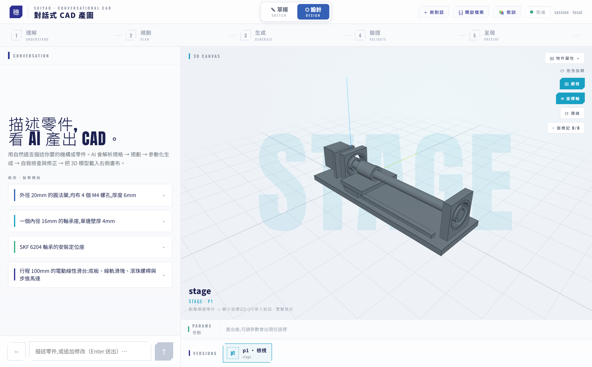
- 1視圖工具:網格 / 座標軸 / 環繞 / 面標記 / 運動示意
- 2拖曳旋轉、滾輪縮放、雙擊推近
- 3模型名稱 / 版號 / 類型
- 單擊圈選零件(多選 toggle,上限 4;選中高亮、其餘半透)。
- 組合件先雙擊圈選某零件,才會顯示它的面菱形◇;點菱形把面/邊帶入對話。
- 「帶入對話」後,代理就能用
cad_measure(量有號距離)、cad_align(算對齊)給你決定性數據——不用嘴巴描述「那個孔」。

- 1單擊圈選零件 → 出現名牌(可帶入對話,多選上限 4)
- 2面菱形◇:點它把面/邊帶入對話,供代理做量測、對齊

- 1開啟物件屬性抽屜
- 2拓撲樹:GROUP / PART / FACE 逐層展開
- 3眼睛三態:實體 → 半透 → 隱藏(把外殼轉半透看內部)
5三種迭代方式
改東西不必每次重講整段需求。看情況選最省力的一條:
① 文字追加
直接在輸入框補一句「把底板加厚到 8mm」「螺孔改 M5」。適合結構性、講得清楚的變更。
② 規格修正面板(SpecPanel)
視圖左上的「解析規格」面板,是事後改規格的作答面。每個 chip 都可點開改值,送出時走固定契約「規格修正:…」,精準只改那一項,不動其他。

- 1視圖右上「解析規格」面板 = 事後改規格的作答面
- 2任何 chip 都可點開改值(這裡把導軌改成 HGR20)
- 3「套用修正」送出;走「規格修正:」契約,精準只改這項
③ 參數滑桿
底部參數列對應產生器的可調尺寸。拖滑桿走決定性路徑(改參數重跑,免 LLM)即時重生,每次套用都是一個新版本。
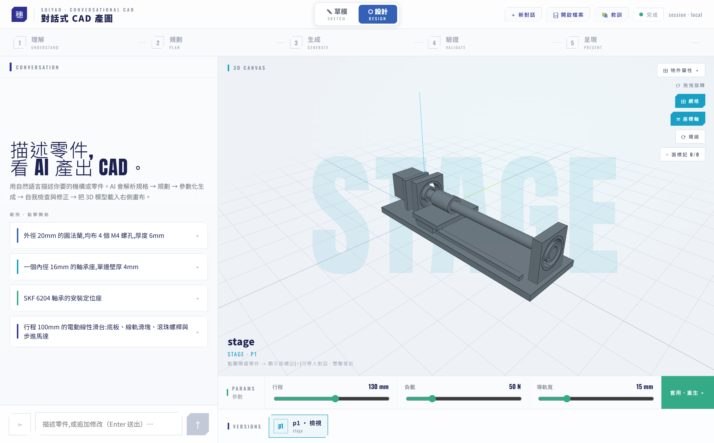
- 1底部參數列:對應產生器的可調尺寸
- 2拖滑桿走決定性路徑即時重生(免 LLM),每次一個新版本
- 3有改動 → 出現「套用 · 重生」;非法組合會顯示繁中錯誤並自動回滾
6運動與機構
會動的東西,ChatCAD 能讓它在畫布裡動給你看。
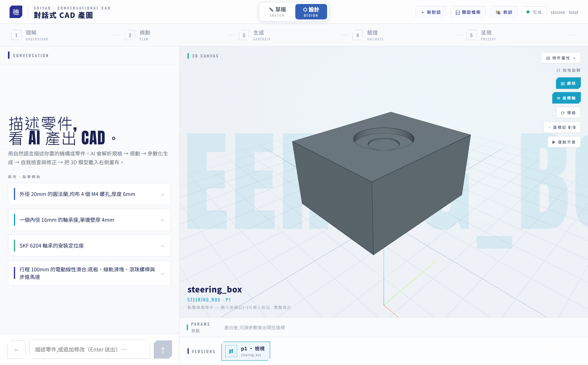
- 1「▶ 運動示意」讓模型自己往復動(齒條齒輪耦合傳動)
- 2同一份 MOTION 宣告:精算真跑掃掠、前端播放、滑桿改行程同步
運動有兩種自由度:linear(沿軸平移)與 revolute(繞樞軸旋轉);嚙合傳動用 couple 把從動軸綁到主動軸,兩者同步「真滾動」不打滑(齒輪齒條、齒輪對)。

- 1拖驅動(DOF)滑桿 scrub,即時看姿態
- 2傳動角讀數:綠(順)/黃(臨界)/紅(干涉或超程)
- 3圖例:各構件對應色
7標準件與鈑金
標準件選型
你只要講規格,代理會用 cad_source_part 從標準件庫挑「滿足需求的最小標準列」並建進模型,還會回報餘裕。目前支援的家族:
| 家族 | 你要給的需求 |
|---|---|
| 軸承 bearing | 軸徑、(選)徑向負載 |
| 氣壓缸 cylinder | 負載、行程、(選)壓力、動作 |
| 步進馬達 stepper | 扭矩 |
| 線性導軌 linear_guide | 負載、軌長 |
| 滾珠螺桿 ball_screw | 負載、行程、目標速度、(選)精度 |
| 平行氣爪 gripper | 夾持力、開口、(選)壓力 |
| 正齒輪 / 齒條 gear | 扭矩、(選)軸徑、最少齒數 |
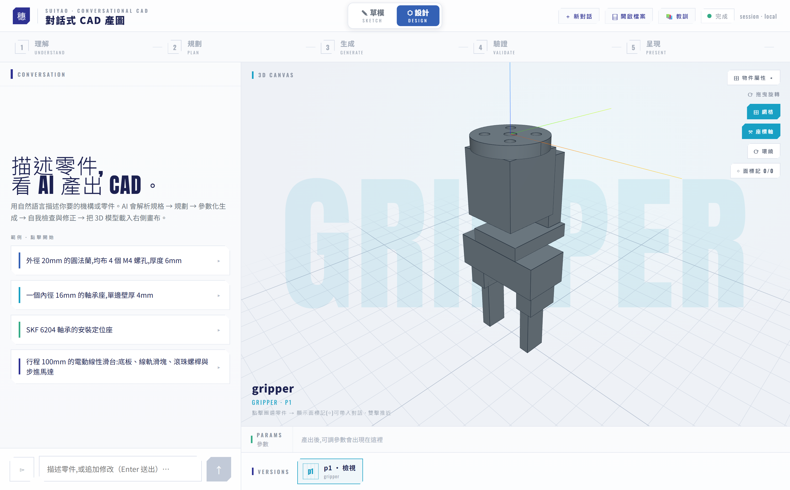
- 1講規格,代理自動選型並建進模型(此為平行氣爪族)
鈑金:摺疊 ↔ 攤平 一鍵切換

- 1鈑金件左上出現「摺疊 / 攤平」切換
- 2點一下瞬間換視角、零重算(build 時已併行產雙 GLB)
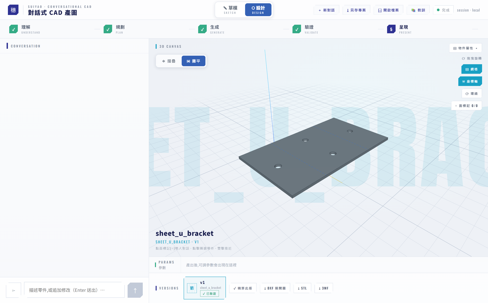
- 1攤平展開圖:板面疊折彎中心線 藍=上折 / 紅=下折
- 2「⤓ DXF 展開圖」雷切下料用,CUT/BEND 分層
8版本、回退與匯出
每一次生成或套用修改都凍結成一個版本,右下的時間軸看得到全部。
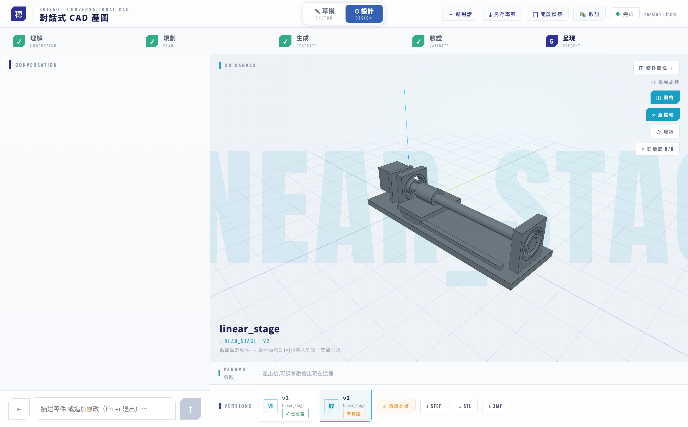
- 1綠:已精算(完整幾何驗證通過)
- 2琥珀:尚未精算(平常迭代很快,不等驗證)
- 3「✓ 精算此版」對此版跑完整驗證
- 4匯出 STEP/STL/3MF;未驗證版按下會自動補跑驗證(匯出閘)
精算 / 匯出閘(對你的體感)
- 平常迭代很快:產圖走快路徑,干涉/掃掠等細檢先標「尚未精算」,不擋你。
- 要交出去前把關一次:按「✓ 精算此版」跑完整幾何驗證;或直接匯出——未驗證版會自動補跑驗證(匯出閘),通過才出檔,擋下「看起來對但幾何有問題」的版本。
匯出格式:當前版可下載 STEP / STL / 3MF;鈑金另有 DXF 展開圖;組合件可「⤓ 零件包」把每個零件拆成一檔打包,或在 3D 圈選幾件就地拆件匯出。
9檔案管理
Header 的「⌸ 開啟檔案」可以打開 models/ 下的既有檔案。有兩種開法,結果差很多:
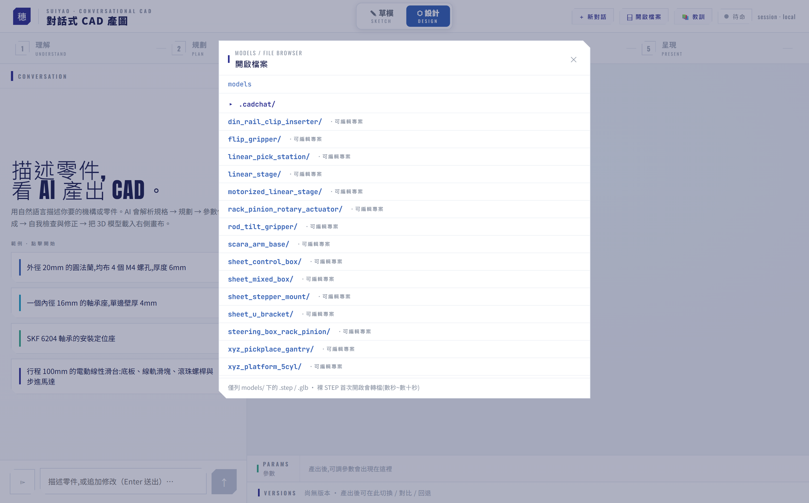
- 1從 models/ 開啟既有檔案
- 2可編輯專案:整列點開 = 複製成 session、帶滑桿可續改
- 3裸 STEP:僅檢視(不出驗證卡)
- 可編輯專案:整列點擊 → 複製成新 session、重建 → 帶參數滑桿、可對話續改。
- 僅檢視:裸 STEP 轉隱藏 GLB 載入,標「檢視」、不出驗證卡(屬性抽屜會標「未經生成驗證」)。
- 在唯讀檢視某個可編輯專案時開始聊天,會自動升級成可編輯 session 再送——不會卡在唯讀死路。
models/<name>/;「＋ 新對話」清空重來。產物與 session 都在 models/.cadchat/ 下,關掉重開也接得回去。10讓它越用越準(教訓系統)
有些缺陷驗證全過、只有肉眼看渲染才發現(例如鏡射定位靜默破壞左右對稱)。ChatCAD 讓你把這種「假綠」教訓收集起來,系統會越用越少犯同樣的錯。

- 1「假綠」缺陷(驗證全過、只有看渲染才發現)修好後,代理問要不要記成教訓
- 2按「是」直寫一筆待蒸餾教訓,未來生成避開同錯
- 3按「否」關掉不記
- 1Header「📚 教訓」開管理面板:看/停用/重新蒸餾/刪除累積教訓
＊附錄:術語表
| 術語 | 意思 |
|---|---|
| STEP | 精確 CAD 幾何交換格式,可送製造/其他 CAD 軟體。 |
| GLB | 3D 顯示用的網格格式,畫布看到的就是它。 |
| DXF | 2D 展開圖,鈑金雷切下料用(CUT/BEND 分層)。 |
| DOF | 自由度(Degree Of Freedom),機構能獨立運動的軸數。 |
| MOTION | 產生器對運動的宣告(軸/樞軸/行程/耦合),一份真相供精算、播放、滑桿共用。 |
| 組合件 / 元件 | 組合件含多個零件(有拓撲樹);元件是單一零件。 |
| 精算 / 匯出閘 | 完整幾何驗證;未驗證版匯出前會自動補跑,通過才出檔。 |